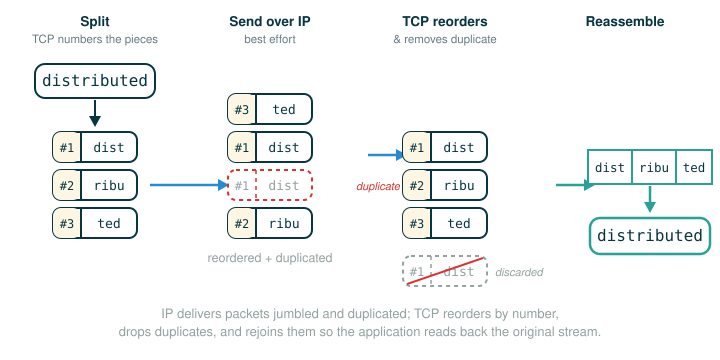

4.6.1 Messages, Protocols, and TCP/IP
So far every program you have written has lived inside a single computer. Names, values, and frames all sit in one machine's memory, and a function can reach any value it needs just by looking it up. This lesson is the moment that assumption breaks.
A distributed system is one in which multiple interconnected but independent computers coordinate to perform a joint computation. Those computers do not share memory. One of them cannot reach into another's frame and read a value. The only thing they can do is send each other messages.
By the end of this lesson you will be able to do five things: explain why raw bytes mean nothing without a shared rule, describe the two classic ways a protocol marks where one piece of a message ends, explain what the Internet Protocol (IP) actually promises and what it pointedly does not, describe how TCP turns that unreliable delivery into an ordered stream of bytes, and explain why that reliability is not free.
The topics here are abstract, so we will lean hard on physical analogies — envelopes, numbered pages, a careful mail clerk. The analogies are a ladder. The exact, source-accurate model is what you keep at the top.
A Sealed Envelope: The Core Picture
Start with something physical. You want to send a friend a note. You write the note, fold it, seal it in an envelope, and write an address on the outside.
Notice the division of labor. The outside of the envelope says where it goes. The inside holds the information. And here is the crucial part: the postal service never reads your note. It does not need to understand your sentence. It only needs the small bit of structure on the outside — the address — to move the envelope from you to your friend.
Computer networks work in this same spirit. When two computers in a distributed system communicate, they do it with messages, and messages sent between computers are sequences of bytes. The network's job is to move those bytes from one place to another. Making sense of the bytes is a separate job, and that is where this lesson really begins.
Bytes Before Meaning
A byte is a small unit of computer information. A sequence of bytes, all by itself, is not yet a number, a word, a web page, or an image. It is raw material.
bytes on the wire: 72 69 76 76 79
one possible meaning: "HELLO"Those five numbers do not announce what they are. They could be five small integers. They could be five letters. They could be part of something larger. The bytes do not decide; something else has to.
That something is a protocol. A message protocol is a set of rules for encoding and interpreting messages. It is the shared agreement that says, in effect, "when you see bytes in this pattern, here is what they mean." The official source puts the requirement sharply: both the sending and receiving computers must agree on the semantics of a message to enable successful communication. The sending computer must encode information in a way that the receiving computer can decode and correctly interpret.
This is why a protocol is best understood as a language agreement. If two people agree in advance that SOS means "I need help," then those three letters carry meaning between them. If they never agreed, the letters are just letters. In exactly the same way, if two computers agree that a certain byte pattern is a request for a web page, then those bytes become that request. Change the agreement and the same bytes could mean something else entirely.
Hold onto this, because it is the whole foundation: bytes carry no meaning on their own. A protocol supplies the meaning.
Two Ways to Mark the Pieces: Fixed Formats and Delimiters
A receiver gets a flat run of bytes. Somehow it has to know where one part of the message stops and the next begins. The source describes two classic strategies a protocol can use.
The first is a fixed format. The protocol fixes certain positions in advance: certain bits or bytes at fixed positions always indicate fixed things. Every message has the same fields, in the same order, with known sizes.
TO: 4 bytes
FROM: 4 bytes
LENGTH: 2 bytes
DATA: that many bytesThe receiver does not guess where fields are. It counts. The first four bytes are always the destination. The next four are always the sender. The two-byte length field then says exactly how many data bytes follow. Because the layout is agreed in advance, parsing is just arithmetic on positions.
The second strategy is a delimiter: a special byte or byte sequence that marks where one part of the message ends. Instead of fixing positions, you fix a separator.
alice@example.com|bob@example.com|meet at 4Here the vertical bar | is the delimiter. A program reading this splits the text at each bar to recover the three parts: a destination, a sender, and a body. This is exactly the strategy you already met when str.split cut a line into words — a protocol simply agrees on which character does the cutting.
The two strategies trade off the same way everywhere in computing. Fixed formats are rigid but fast and unambiguous. Delimiters are flexible and human-readable but force you to worry about what happens if the delimiter character appears inside the data. Either way, the receiver's job is the same four steps:
- The receiving computer gets a run of bytes.
- The protocol tells it where each part of the message begins and ends.
- The receiver decodes those bytes into useful values.
- The program acts on the decoded values.
Skip the protocol and step two is impossible: the same bytes could be split a dozen ways and mean a dozen things.
IP: Numbered Pages in the Mail
A protocol tells two computers how to interpret a message once it arrives. A separate problem is getting the bytes there at all, across the sprawling worldwide network we call the Internet. That job belongs to the Internet Protocol, or IP, which specifies how to transfer packets of data among different networks.
IP does not usually ship a large message as one enormous object. It cuts the data into packets. Here is the analogy to keep: imagine writing a long letter across numbered pages.
Page 1 of 4: "The answer begins..."
Page 2 of 4: "with the fact that..."
Page 3 of 4: "messages travel..."
Page 4 of 4: "as packets."Why cut it up? Because a packet has a size limit. The source is exact about this:
> Packets transferred using modern IP implementations (IPv4 and IPv6) have a maximum size of 65,535 bytes.
So a packet can hold at most bytes. That is large compared to a short note, but small compared to a video, a large file, or a rich web page. Anything bigger than one packet's capacity must be divided across many packets — many numbered pages.
Each packet carries delivery information up front. The source describes a packet as carrying a header containing the destination IP address, along with other information. The header is like the address written on the outside of the envelope: it is what the network reads to decide where the packet goes. The actual data the packet carries — the writing on the page itself — is often called the payload. Keep these straight:
| Part of a packet | Plain meaning | Envelope analogy |
|---|---|---|
| header | delivery info, including the destination IP address | the address on the outside |
| payload (the carried data) | the bytes being transported | the letter on the inside |
(The word header and the destination-address detail come straight from the source. "Payload" is the standard name for the carried data; the source simply refers to it as the data the packet carries.)
Best-Effort Delivery: The Network Does Not Promise
Here is the part that surprises new programmers. The network does not guarantee that your packets arrive. The source says all packets are forwarded throughout the network toward the destination using simple routing rules on a best-effort basis.
Read that phrase carefully. "Best effort" means the network tries, but it makes no promise. Concretely, the source names three things that can go wrong:
- Lost. Some packets may be lost — a packet simply never reaches the destination.
- Duplicated. Some packets may be transmitted multiple times, so the same packet arrives more than once.
- Reordered. IP does not guarantee that packets will be received in the same order they were sent. Page 3 may arrive before page 2.
This is not a bug in your Python function, and it is not something you did wrong. It is a property of the network layer itself. Between you and the destination sit many machines, each making fast local decisions about where to forward each packet next. With pages traveling independently through that maze, some get lost, some get copied, and some overtake others.
So if IP is a rough, no-promises delivery service, any program that needs dependable communication needs another layer of rules on top. That layer is TCP.
TCP: The Careful Mail Clerk
The Transmission Control Protocol, or TCP, provides reliable, ordered transmission of arbitrarily large byte streams. Where IP shrugs and says "best effort," TCP gives a real guarantee: the bytes you send come out the other end complete and in order, no matter how messy the network was underneath.
The source is precise about how it pulls this off. The protocol provides its guarantee by correctly ordering packets transferred by the IP, removing duplicates, and requesting retransmission of lost packets. Map those three jobs onto the three failures from the last section and you can see TCP is the exact antidote to each one:
| IP failure (best effort) | What TCP does about it |
|---|---|
| packets arrive out of order | correctly orders the packets before delivering them |
| packets are duplicated | removes the duplicates |
| packets are lost | requests retransmission of the lost packets |
The analogy that makes this click is a careful mail clerk. Pages of a long letter arrive at the clerk's desk one at a time, possibly out of order, possibly doubled, possibly with a gap. The clerk reads the page numbers, throws out duplicate copies, sets aside any pages that arrived early, and — when a page is plainly missing — asks the sender for another copy before handing the finished, in-order letter to the reader.
A second analogy sharpens the "asks for another copy" part: certified mail. With certified mail, the recipient signs a receipt for what arrives. TCP behaves similarly — the receiver acknowledges the data it has gotten, and anything the sender does not see acknowledged gets sent again. The reliability comes from this acknowledge-and-resend pattern, not from the network magically becoming perfect. The pages still travel through the same unreliable IP; TCP just refuses to give up until every page is accounted for.
Stacked up, the layers look like this:
application bytes
-> TCP arranges them into segments and tracks each one (segments are TCP's name for the pieces IP will carry as packets)
-> IP carries the segments as packets across the network
-> best-effort delivery: some lost, duplicated, reordered
-> TCP reorders, drops duplicates, re-requests anything missing
-> application reads the bytes back in order, as if nothing went wrongThe payoff is a clean abstraction for your program. As far as the application can tell, it wrote a stream of bytes and the other side read that same stream of bytes, in order. All the reordering, de-duplicating, and re-requesting happens out of sight, below the line you write.
The Cost of Reliability: Latency and the Handshake
Reliability is not free. The source says plainly that this improved reliability comes at the expense of latency, the time required to send a message from one point to another. Every acknowledgment that has to travel back, every lost page that has to be re-requested and resent, adds delay. A reliable conversation is a slower conversation than a careless one.
Some of that cost is paid before any real data moves at all. Before two programs exchange a byte stream, TCP establishes a connection, and it does so with a three-step exchange the source spells out. One more idea first: a single computer can run many programs at once, so each machine has many numbered mailboxes called ports, and a port number just says which program on the machine a message is meant for. Frame the two sides as A (the side opening the connection) and B (the side it is reaching):
- A sends a request to a port of B to establish a TCP connection, providing a port number to which to send the response.
- B sends a response to the port specified by A and waits for its response to be acknowledged.
- A sends an acknowledgment response, verifying that data can be transferred in both directions.
Only after these three steps does the connection behave like a settled, two-way conversation. The everyday version of this is two people on a bad phone line: "Can you hear me?" "Yes — can you hear me?" "Yes." That little ceremony costs a moment, but it guarantees both sides know the channel works in both directions before anyone says anything that matters.
Follow the Line: Anatomy of a Delimited Message
When code or data looks dense, the habit that saves you is the same one from day one: stop reading it as one blob and walk it one piece at a time. Take the delimited message from earlier and read it left to right, one token per row, with a final row for the result.
alice@example.com|bob@example.com|meet at 4
├─ alice@example.com ... first field: the destination, up to the first |
├─ | ................... delimiter: marks the end of one field
├─ bob@example.com ..... second field: the sender, up to the next |
├─ | ................... delimiter: marks the end of the second field
├─ meet at 4 ........... third field: the body, everything after the last |
└─ splits into ......... ["alice@example.com", "bob@example.com", "meet at 4"]Every row except the last describes one token of the line. The bars are not part of any field; they are the agreed signal "a field ends here." The final row shows the action: applying the protocol turns one flat string into three recovered pieces.
Follow the Line: Anatomy of a Fixed-Format Message
The delimited message marks its parts with a separator. The other strategy, a fixed format, marks them by position: the layout is agreed in advance, so the receiver just counts. Read one such message the same way — one field per row, then a final row for what the receiver recovers. Picture a tiny fixed-format message whose bytes, written as their values, run straight across:
00 00 00 02 | 00 00 00 01 | 00 02 | 48 49
├─ 00 00 00 02 .. TO field: the first 4 bytes, the destination address
├─ 00 00 00 01 .. FROM field: the next 4 bytes, the sender address
├─ 00 02 ........ LENGTH field: the next 2 bytes, the count of data bytes
├─ 48 49 ........ DATA field: exactly that many bytes, here the payload
└─ parses into .. destination 2, sender 1, then 2 bytes of dataEvery row except the last describes one field of the message. Nothing in the bytes announces where a field ends; the fixed format does, by fixing each field's position and size in advance. The final row shows the result: counting through the agreed positions turns one flat run of bytes into the recovered fields. (The vertical bars above are only drawn to help your eye — in a true fixed format there is no delimiter byte, just the agreed lengths.)
A Worked Trace: One Message, Split and Reassembled
Concepts settle when you watch them run. Trace a single message as IP and TCP handle it together. Suppose the application wants to send the eleven-character string "distributed", and for this small example imagine each packet can carry only 4 characters.
- Split. TCP hands the data to IP in packet-sized pieces and numbers them, because IP cannot promise order. Packet 1 carries
dist, packet 2 carriesribu, packet 3 carriested. - Send, best effort. IP forwards all three across the network. Suppose packet 3 races ahead and arrives first, then packet 1, then packet 2. Suppose a stray copy of packet 1 also shows up. This is normal best-effort behavior: reordered and duplicated.
- Reorder. TCP at the receiver reads the numbers and sorts: packet 1, then 2, then 3 — regardless of arrival order.
- Remove duplicates. The second copy of packet 1 is recognized as already-seen and discarded.
- Check for gaps and re-request. If, say, packet 2 had never arrived at all, TCP would not deliver a broken stream. It would request retransmission and wait for the missing piece.
- Deliver in order. Once every numbered piece is present and ordered, TCP joins them —
dist+ribu+ted— and the application reads back exactly"distributed".
That is the entire model in motion. IP did the rough carrying. TCP did the careful bookkeeping. The application saw a clean, ordered stream and never had to know the pages arrived in a jumble.

⚠Common Beginner Traps
- Thinking bytes already know their meaning. A run of bytes is raw representation. Only a protocol — a shared agreement on semantics — turns it into a number, a name, or a request.
- Confusing the two ways to mark fields. A fixed format pins fields to known positions and sizes; a delimiter marks ends with a special byte. They solve the same problem differently, and reading one as the other recovers garbage fields — counting positions in a delimited message, or splitting on a character that a fixed format never reserved, carves the bytes at the wrong boundaries.
- Thinking IP guarantees delivery. IP is best effort. Packets may be lost, duplicated, or reordered. That is a property of the network, not a defect in your code.
- Thinking TCP makes the network reliable. TCP does not fix the network. The pages still travel over the same best-effort IP. TCP layers ordering, duplicate removal, and retransmission on top so the application sees reliability.
- Forgetting that reliability costs time. Acknowledgments, retransmissions, and the connection handshake all add latency. A reliable channel is slower than a careless one, and that trade-off is the point, not an accident.
- Treating the header as part of the data. The header (with the destination address) is delivery information the network reads; the carried data is separate. Mixing them up is like reading the address as if it were the letter.
✓Check Your Understanding
- Why does a sequence of bytes need a protocol before it becomes meaningful?
- Name the two strategies a protocol can use to mark where the parts of a message begin and end, and describe each in one sentence.
- Suppose IP could carry only 3 characters per packet and you need to send the 10-character message
"networking". How many packets does that take, and what does the last one carry? - The source says IP delivers on a best-effort basis. Name the three specific things that can therefore happen to packets in transit.
- TCP provides a reliable, ordered byte stream. According to the source, what three things does it do to provide that guarantee?
- What is the cost the source associates with TCP's improved reliability, and what is one source of that cost before any data is even sent?
- In the three-step handshake, what does side A include in its very first request, and what has been verified by the time the third message arrives?
Show the answers
- Bytes carry no meaning on their own. A protocol is the shared agreement on semantics that tells the receiver how to decode and interpret the bytes — where each field begins and ends and what each part means. Without that agreement the same bytes could be read many different ways.
- A fixed format places certain fields at fixed positions with known sizes, so the receiver counts to find each field. A delimiter uses a special byte or byte sequence to mark where one part ends, so the receiver splits the bytes at each delimiter.
- It takes four packets. The first three carry full 3-character chunks (
"net","wor","kin"), and the last carries the single leftover character"g". Ten characters do not divide evenly by three, so the final packet is short. - Packets may be lost, may be duplicated (transmitted multiple times), and may be reordered (not received in the order they were sent).
- TCP correctly orders the packets transferred by IP, removes duplicates, and requests retransmission of lost packets.
- The cost is latency, the time required to send a message from one point to another. One source of it before data moves is the three-step connection handshake, which must complete before the byte stream begins; acknowledgments and retransmissions add further latency during the conversation.
- In its first request, A includes a port number on which to receive B's response. By the time A sends the third message (its acknowledgment), both sides have verified that data can be transferred in both directions, so the connection is open and ready.
§Summary
Distributed systems are made of independent computers that do not share memory, so they coordinate by sending messages, and messages are sequences of bytes. Bytes mean nothing until a protocol supplies the semantics, and a protocol marks the parts of a message either by fixing fields at known positions or by separating them with delimiter bytes. The Internet Protocol carries data as packets of up to 65,535 bytes, each with a header holding the destination address, but it delivers only on a best-effort basis — packets may be lost, duplicated, or reordered. The Transmission Control Protocol builds reliability on top of IP by ordering packets correctly, removing duplicates, and requesting retransmission of anything lost, presenting the application with a reliable, ordered stream of arbitrarily large size. That reliability costs latency, paid both in the ongoing acknowledgments and retransmissions and up front in the three-step handshake that opens a connection before any data flows.
▶Step-Through Checkpoint
The block below is not a real network — it has no sockets and no actual machines. It is a deterministic model of the one idea at the center of this lesson: a message is split into numbered packets, the packets arrive out of order (and even duplicated), and the receiver uses the numbers to drop duplicates and reassemble the original. Stepping through it draws the environment diagram behind that model: each split_message packet is a {"number", "data"} dict on the heap, messy_arrival is a list of references pointing back at those same dicts, and inside the reassemble frame the seen dictionary collects them by number so a repeated reference simply rebinds an existing key. Before you step through it, write down three predictions: what value position holds when the while loop finally stops, in what order the keys of seen appear as reassemble works through messy_arrival, and whether seen ends with four entries or three.
# (1)
def split_message(message, size):
packets = []
position = 0
number = 1
while position < len(message):
chunk = message[position:position + size]
packets.append({"number": number, "data": chunk})
position = position + size
number = number + 1
return packets
def reassemble(received_packets):
seen = {}
for packet in received_packets:
seen[packet["number"]] = packet["data"]
ordered_numbers = sorted(seen)
pieces = [seen[n] for n in ordered_numbers]
return "".join(pieces)
packets = split_message("distributed", 4)
messy_arrival = [packets[2], packets[0], packets[0], packets[1]]
result = reassemble(messy_arrival)
print(result)
Step through the block one line at a time and check each prediction as the bindings appear. The while loop should have left position at 12 — a full step past the eleven-character string — after producing three numbered records carrying "dist", "ribu", and "ted". The list messy_arrival deliberately delivers them out of order and includes packet 1 twice, mimicking IP's reordering and duplication. Inside reassemble, the keys of seen appear in arrival order — 3, then 1, then 2 — and the second copy of packet 1 merely overwrites the existing entry with the identical value, so the dictionary ends with three entries, not four. sorted(seen) puts the numbers back in order, and joining the pieces rebuilds "distributed". That is exactly what TCP does for you — order restored, duplicate removed — except here you can watch every step.